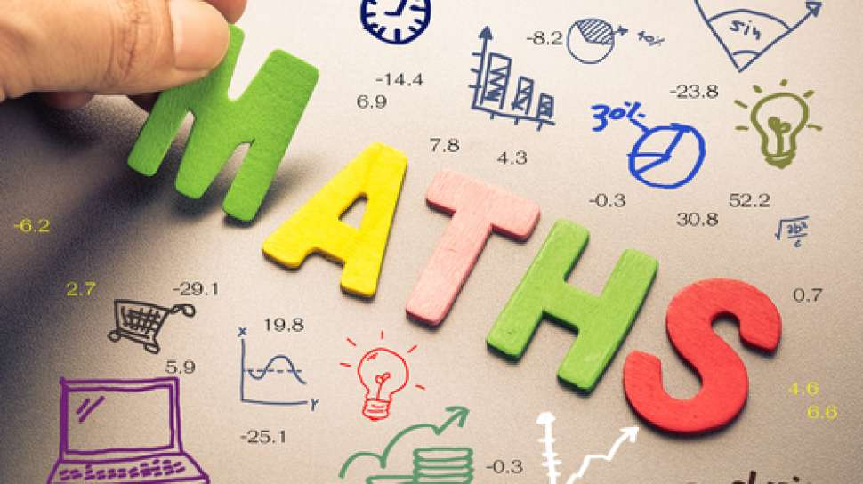
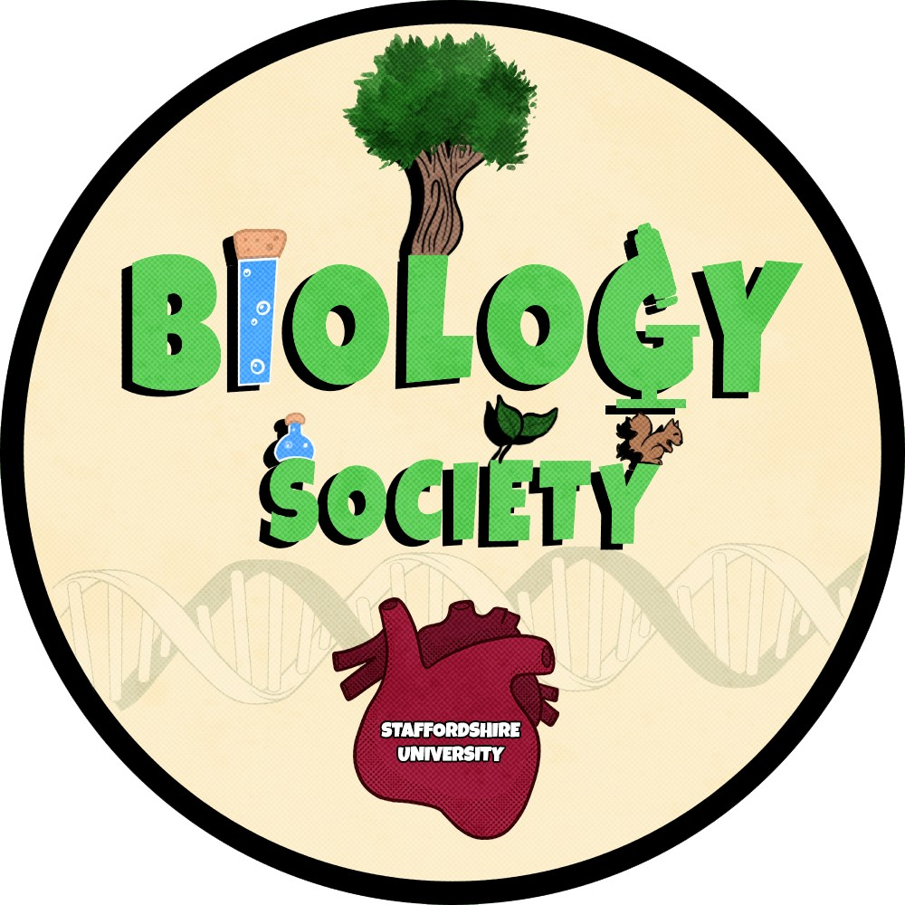
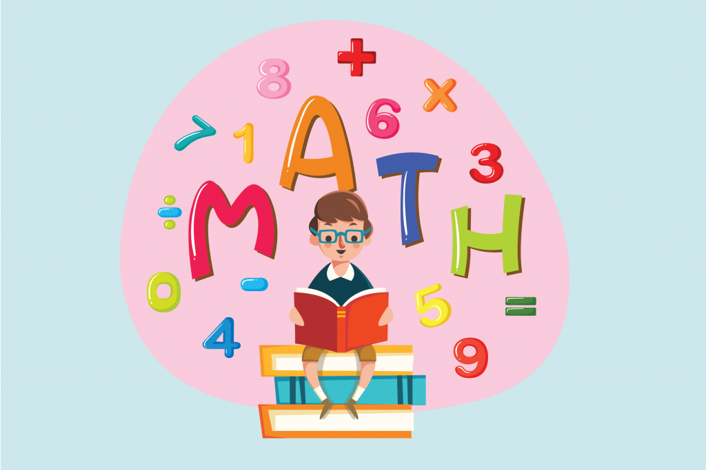
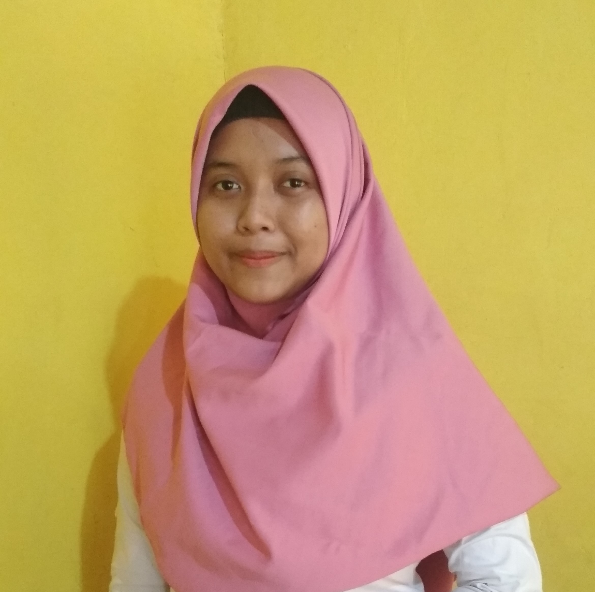
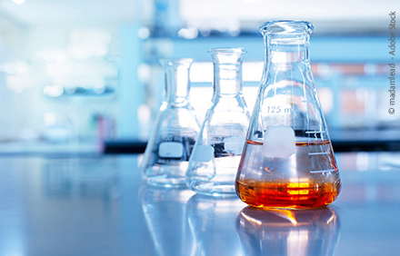

|

Menyelesaikan permasalahan matematika dengan gambarAmir orang Indonesia berteman dengan seorang Amerika bernama Michael. Suatu kali Amir mendapati badan Michael menggigil. “What happened to you?” tanya Amir. “I think I’ve got a fever, my body temperature is 104oF.” Amir tidak tahu seberapa panas suhu tubuh Michael. Maka, ia melakukan konversi suhu, 5/9 x (104 – 32) = 40oC. “Wow, that’s 40oC. You must seek a doctor!” seru Amir pada Michael. Satuan-satuan dalam suhu tubuh merupakan contoh deskripsi simbolik. Di dalam kehidupan sehari-hari seringkali kita mengalami kesulitan dalam mengestimasi dengan cepat deskripsi simbolik yang tidak kita kenal, seperti satuan-satuan pengukuran (inci, lbs, galon, dll.) dan rumus-rumus dalam matematika. Hal ini berkaitan dengan keterbatasan otak kita dalam mengolah deskripsi simbolik. Deskripsi lain seperti gambar jauh lebih mudah kita pahami. Itulah mengapa hampir seluruh rambu lalu lintas menggunakan deskripsi gambar. Kali ini kita akan membahas beberapa permasalahan matematika yang lebih mudah diselesaikan dengan metode gambar daripada metode simbolik. Perlu diingat bahwa trik ini berlaku untuk beberapa permasalahan aljabar saja. Bila deskripsi gambar tidak memungkinkan, mau tidak mau kita harus menyelesaikannya dengan standar aljabar yang ada. Yuk kita mulai! Jumlah deret bilangan ganjil Mari kita buktikan bahwa jumlah deret bilangan ganjil Sn = 1 + 3 + 5 + … + (2n - 1) adalah n2. Permasalahan ini mungkin dapat diselesaikan dengan menggunakan rumus yang pernah kita pelajari di sekolah, Sn = n(1 +(2n – 1))/2 = n2. Namun, rumus di atas tidak secara intuitif menjelaskan mengapa jumlah bilangan ganjil ke-n merupakan bilangan kuadrat n2. Untuk lebih jelasnya kita dapat menggunakan metode gambar. Dengan metode gambar tampak jelas bahwa penjumlahan bilangan ganjil adalah bilangan kuadrat. Silakan teman-teman buktikan menggunakan metode gambar bahwa Sn = 1 + 2 + 3 + … + n + … + 3 + 2 + 1 = n2 dan Sn = 1 + 2 + 3 + … + n = n (n + 1)/2 |
Biology

|
||
|
Mathematics

|
|||
|

Nisfa Lailatul AzizahHalo... nama saya Nisfa Lailatul Azizah. Saya mahasiswa semester 6 Universitas Negeri Malang program studi S1 Pendidikan Matematika. Belajar bukan hanya dari buku yang kita baca melainkan dari apa saja yang bisa kita gunakan untuk belajar. Alam, keadaan sosial, orang lain, dan masih banyak lagi sumber yang dapat kita gunakan untuk belajar. Belajarlah dimanapun dan kapnpun. |
Chemist

|
||